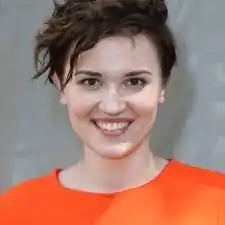

Народилася 19 серпня 1988 року в Нью-Йорку, дитинство провела у Беррінгтоні, штат Іллінойс. Мати — польська художниця Барбара Рідз, батько — німець Едгар Густав Рот. Вероніка — наймолодша з трьох дітей, має брата і сестру. Коли їй було 5 років, батьки розлучилися. Мати одружилася з фінансовим консультантом Френком Россом, що співпрацював з ландшафтними компаніями. Про батька говорить: "Він мав роботу і працював на відстані. Тепер у мене добрі відносини із моїм вітчимом".
Має німецьке та польське походження. Її бабуся і дідусь по материній лінії одні з вцілілих після концентраційного табору.
Закінчивши середню школу Беррінгтона, вступила до Карлетонського коледжу. Після першого року навчання перевелась до Північно-Західного університету (філологічний факультет), де закінчила творчу програму для майбутніх письменників, і вчилася на відмінно, поки не почала прогулювати заняття, щоб писати власну книгу. Її перший роман-антиутопія "Дивергент" дебютував на шостій сходинці в списку бестселерів "New York Times", а 2012 року піднімався до другої позначки. 2011 року Вероніка вийшла заміж за фотографа Нельсона Фітча. Нині мешкає в Чикаго. Перша частина трилогії "Дивергент" стала основою для однойменної екранізації з Шейлін Вудлі в головній ролі. Друга частина трилогії під назвою "Інсургент" вийшла в березні 2015. А третя "Аллегіант" — в березні 2016.